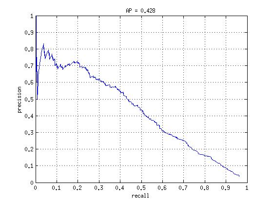
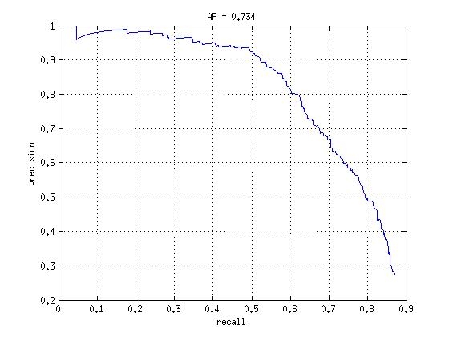
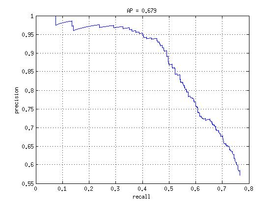
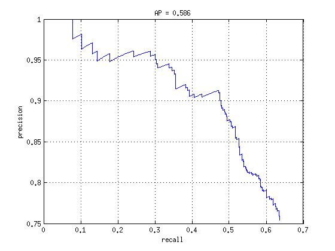
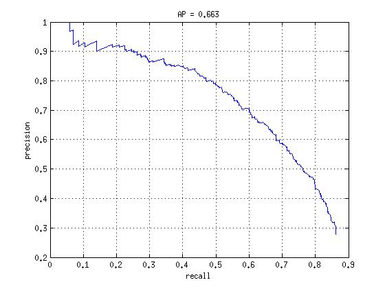
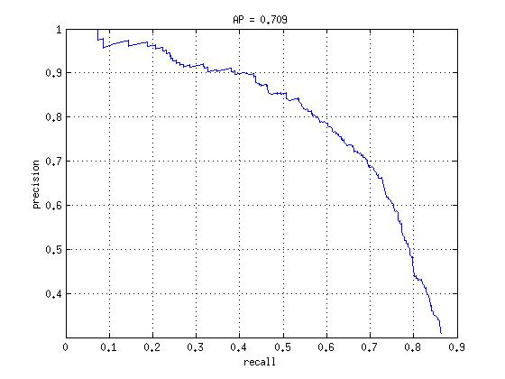

CS143 Project 4: Face detection with a sliding window
Overview
The sliding window model independently classify all image patches as an object or not.
In this project, we strive to achieve high accuracy using ideas present in papers such as Dalal-Triggs 2005, and/or Viola-Jones 2001. The prevalent idea present in these papers are mining hard negatives. Mining hard negatives provide means of reducing false positive rates.
Methodology
Pipeline:
- Get cropped positive train examples (get patches of faces), and convert them into SIFT features
- Get random negative if it is the first iteration. Otherwise, get hard negatives by running the classifier on the images that does NOT have faces; every detection is a false positive.
- Train the classifier based on the negatives we got in the above step, and add it to the cascade
- repeat steps 2 and 3 until N number of the classifiers in the cascade.
- At this point, the classifier is built. Run the detector.
- Evaluate the detections.
I used vl_dsift function provided by vlfeats lib to extract SIFT features of the image. This change in the image feature representation improved the average precision significantly from 0.05 to 0.5.
The primal_svn function was used to train the linear SVM. Through the experiments, lambda of 35 seemed to work the best.
Results
Using SIFT features
The precision went from 0.05 to as below.

With cascading (N = 6)
The precision did increase significantly. (6 cascades).

With cascading (N = 7)

With cascading (N = 10)
It seems like the average precision decreases if too many classifiers are used. One guess it that the accumulation of false negatives may affect the total precision.

Additional Results
Threshholding on total false positive of the cascade
As seen in the previous results, too many stages in the cascade may decrease the precision. One attempt to find the best number of stages is to use some sense of total false positive rate. Instead of just getting N number of the cascade, the total false positive rate was calculated and then the cascade was continued until the total false positive rate was below the threshhold.
threshhold = 0.0001

threshhold = 0.000001
